תספורות גבריםMen’s haircuts
בכיסא השחור, מול המראה.In the black chair, facing the mirror.
קונספט לדוגמה שנבנה עבור קרחת · זה אינו האתר הרשמי של העסקA sample concept built for Karachat · This is not the business’s official website
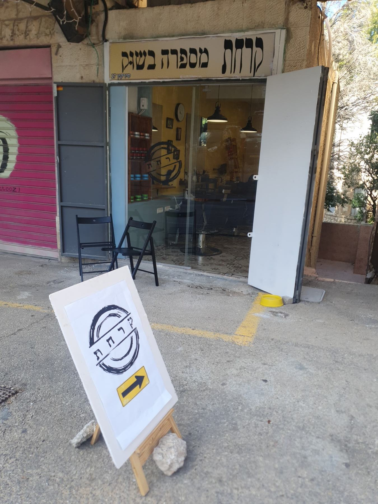
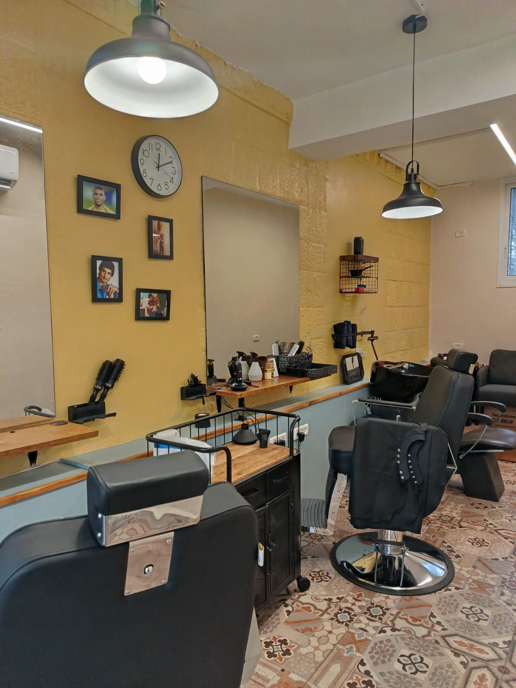
מספרת גברים בסירקין 17, בשוק תלפיות בחיפה.A men’s barbershop at 17 Sirkin St, in Haifa’s Talpiot market.
שם עם קריצה. בפנים: תספורות גברים.A name with a wink. Inside, men’s haircuts.
גוללים או גוררים: תמונות אמיתיות מתוך קרחת.Scroll or drag: real photos from inside Karachat.
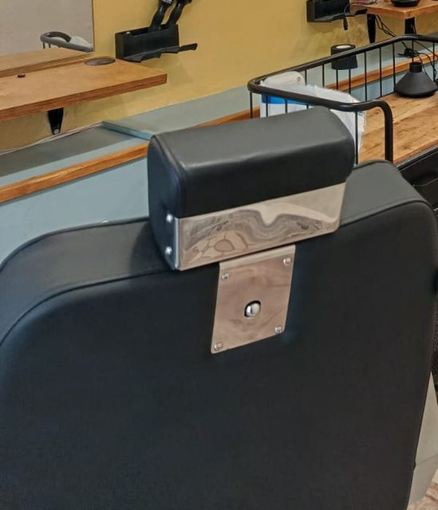
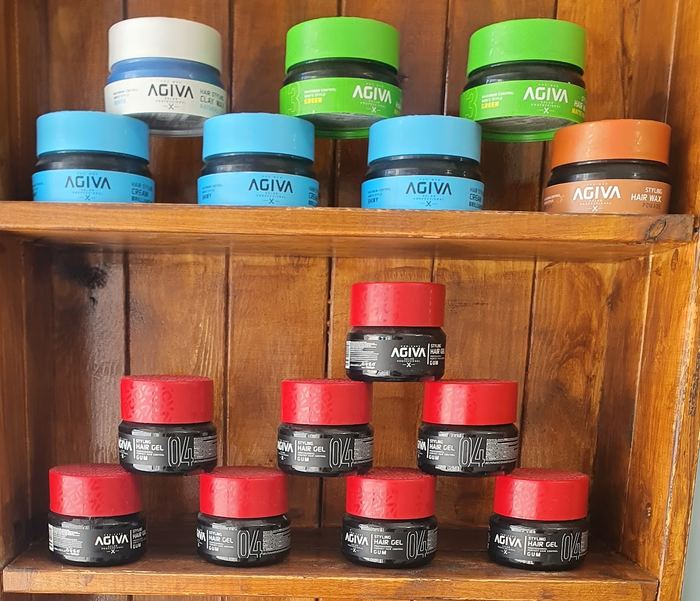
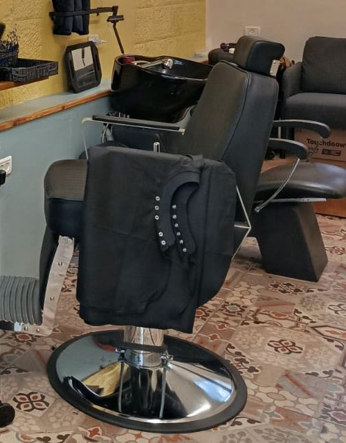
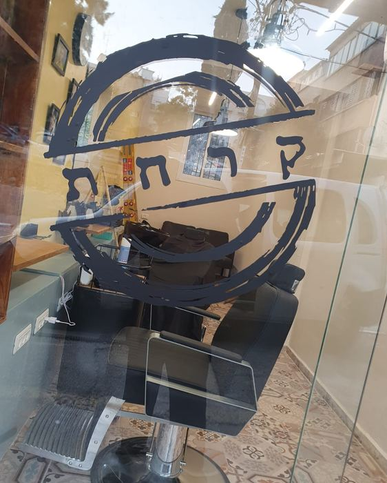
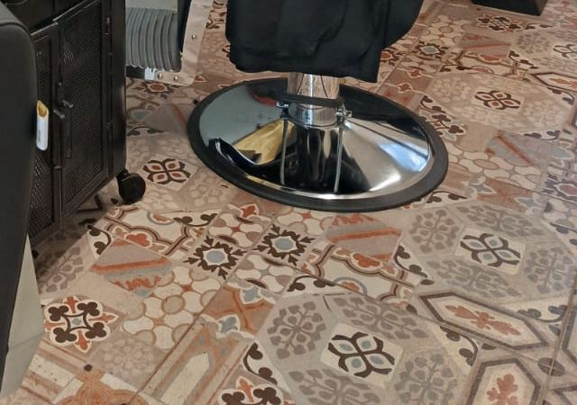
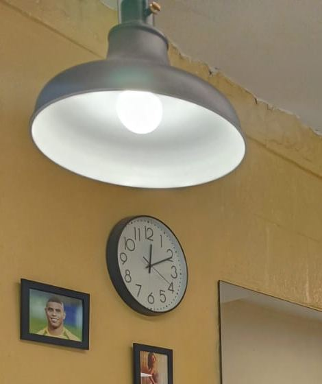
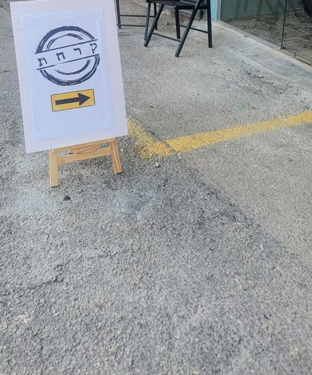
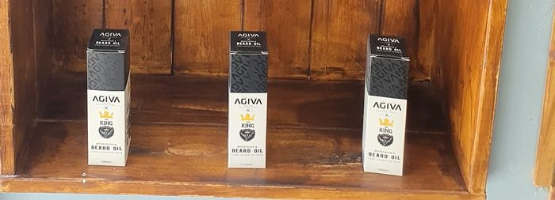
כיסא, מראה, מדף מוצרים ושעון על הקיר.A chair, a mirror, a product shelf and a clock on the wall.
בכיסא השחור, מול המראה.In the black chair, facing the mirror.
שני–חמישי · 12:00–19:00Mon–Thu · 12:00–19:00
דרך עמוד התורים של קרחת.Through Karachat’s booking page.
לקביעת תורBook a slot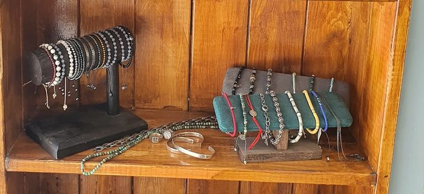
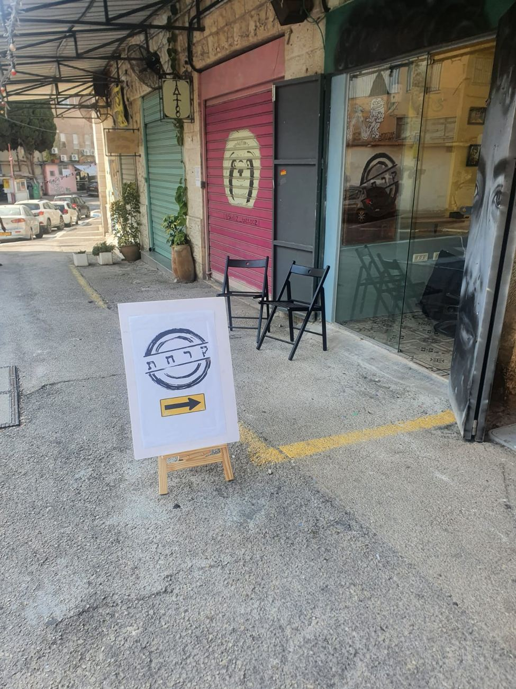
סירקין 17, חיפה.17 Sirkin St, Haifa.
בוחרים, וההודעה נכתבת על השלט.Pick, and the note writes itself on the sign.
או קובעים תור ישר בעמוד התורים.Or book directly on the booking page.
5.0
125 ביקורות בגוגל. שלוש מהן:125 Google reviews. Three of them:
״מספרת גברים מצוינת! שירות מקצועי ויחס מעולה. התספורת יצאה בדיוק כמו שרציתי, עבודה מדויקת ואווירה טובה במקום.״“An excellent men’s barbershop! Professional service and great attitude. The haircut came out exactly how I wanted: precise work and a good atmosphere.”
״אחלה תספורת ואחלה בן אדם, ממליץ להגיע, מקצוען ונשמה טובה. אחזור כל פעם.״“A great haircut and a great guy. I recommend coming. A professional and a good soul. I’ll come back every time.”
״יחס חם ועבודה מקצועית, בהחלט אחזור ל״קרחת״ בהמשך!״“Warm attitude and professional work. I’ll definitely come back to ‘Karachat’!”
בשוק תלפיות. מעל הדלת: ״קרחת מספרה בשוק״.In the Talpiot market. Above the door: “Karachat, barbershop in the market.”